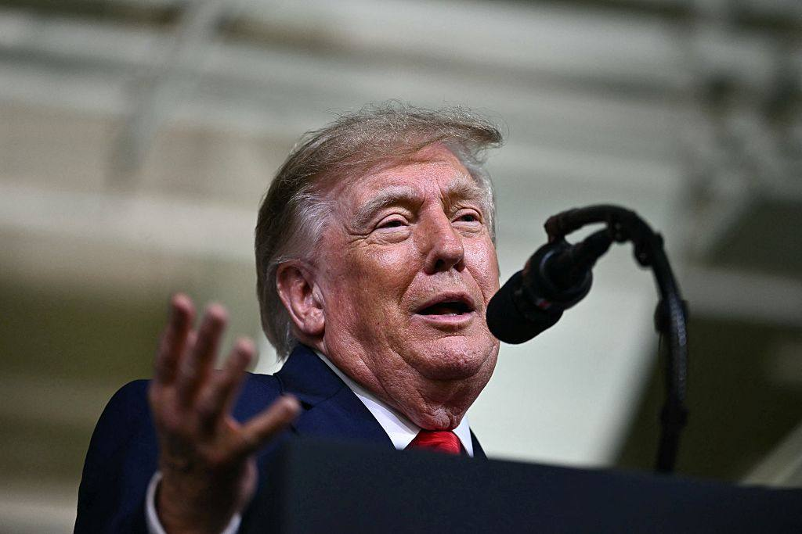
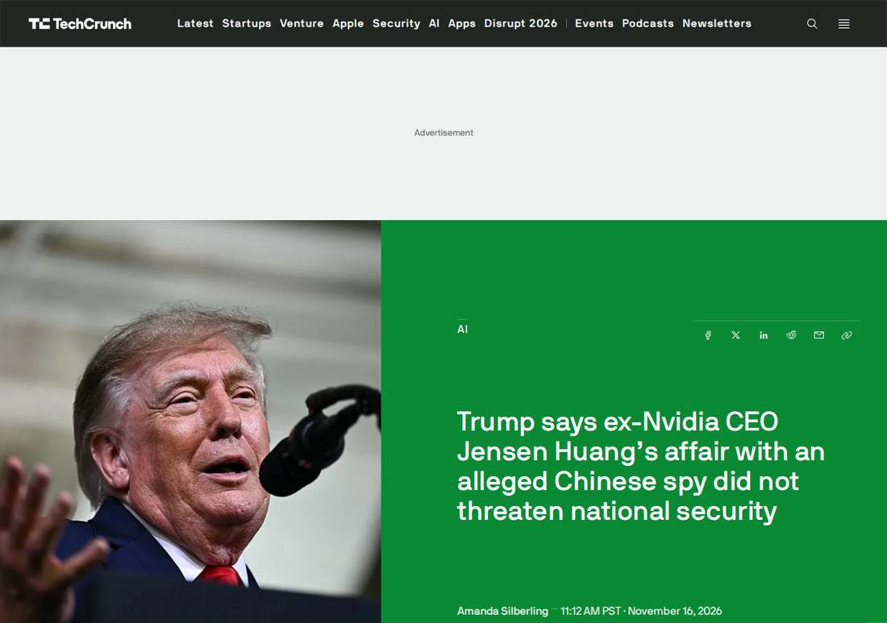

Trump Backs Huang's Return and Doubts the Spy Claim
President Donald Trump said on Monday he would not mind seeing Jensen Huang return as Nvidia CEO, said the affair with alleged Chinese spy Alice Huang did not put U.S. national security at risk, and questioned whether she is a spy at all, contradicting U.S. intelligence findings he was reportedly briefed on twice. Nvidia's board, CNBC reported, is not considering a return.

- 01THE RESIGNATION — Last week, Huang resigns as Nvidia chief executive after admitting to affairs with Alice Huang and two Nvidia employees; the board names chief financial officer Colette Kress interim chief.
- 02THE COMEBACK CAMPAIGN — On Sunday, the Financial Times reports Huang is considering a comeback and has discussed it with confidants; a public petition for his reinstatement passes 177,000 signatures.
- 03THE PRESIDENT'S REMARKS — On Monday, Trump tells reporters he would not mind Huang returning, says national security was "not put at risk," doubts Alice Huang is a spy, and says he may raise the issue with Xi Jinping on his Asia trip.
WHAT HAPPENEDWhat Happened
President Donald Trump told reporters on Monday, as he departed the White House for a trip to the Philippines and China, that he would not mind seeing Jensen Huang return as chief executive of Nvidia. Huang stepped down last week after admitting to an affair with a suspected Chinese spy, and the board named chief financial officer Colette Kress interim chief. "I would certainly not mind seeing that," Trump said of Huang's potential return. "He could return. There's a big group of people that would like him to return." He said Huang had "learned a big lesson" and that he may discuss the issue with Chinese President Xi Jinping during this week's trip.
Trump said the affair did not put U.S. national security at risk: "It was not put at risk, and our country is now stronger than ever before, and you know China plays games with us, and we play games with China." He went further, publicly doubting the intelligence assessment of Alice Huang, the former Megaspeed executive at the center of the case: "Nobody's proven that she's a spy. She may not be a spy," and "I don't know that she was a spy at all." That contradicts an internal memo overseen last year by Secretary of State Marco Rubio, circulated among top policymakers, which warned that Alice Huang was a spy for China's Ministry of State Security. Trump was reportedly briefed on the findings at least twice, including once in May aboard Air Force One, shortly before Huang joined him on a trip to China; Trump has maintained he was not aware of the claims.
The remarks land against a board that is not moving. CNBC reported on Monday evening that Nvidia's board is not considering or discussing Huang's return and is focused on a national-security investigation into him. Huang is considering a comeback and has discussed it with confidants, the Financial Times reported on Sunday, and a public petition calling for his reinstatement has drawn more than 177,000 signatures, including Elon Musk, Y Combinator president Garry Tan and Epic Games chief executive Tim Sweeney. OpenAI chief executive Sam Altman, speaking at a Semafor event on Monday, declined to say whether Huang should return, said the industry would be "fine" without him, and called Huang a hero with flaws. Trump also said he has no plans to replace Commerce Secretary Howard Lutnick, who faces questions over AI chip export enforcement, saying Lutnick is "doing a very good job."
WHY IT MATTERSThe president versus his own intelligence
Trump's remarks put the White House publicly at odds with its own intelligence record. The memo warning that Alice Huang was a Chinese intelligence asset was overseen by his own secretary of state, circulated among his top policymakers, and briefed to him at least twice, yet the president now says nobody has proven she is a spy and that he was not aware of the claims. That gap is the story: either the briefings did not land, or the president is choosing to discount them in public. Either way, the doubt comes from the top, and it undercuts the premise of the investigation the Nvidia board says it is focused on.
The timing sharpens the stakes. Nvidia reports third-quarter results on November 17, its first under interim chief Colette Kress, and Huang is due to face Congress in December, a House interview on December 1 and a Senate Banking hearing on December 3. A presidential endorsement of Huang's return, paired with doubt about the spy claim, gives his comeback campaign its most powerful backer while the board holds the opposite line. The market question is no longer only who runs Nvidia, but whether the export-control case built around the Megaspeed affair survives its own politics.
WHAT TO WATCHThe board, the trip, and the earnings call
Whether Trump raises the Huang case with Xi Jinping during this week's trip, and what, if anything, comes back from that conversation. Any public comment from Beijing would land directly on the espionage allegation and on the chip-export negotiations running alongside it.
Whether the board's position moves after Tuesday's earnings. The board has the formal power, and CNBC's reporting says it is not considering a return; but a strong quarter under Kress would strengthen the case for continuity, while a weak one would hand the comeback campaign its best argument. Watch also for any statement from Nvidia itself, which has said nothing about Trump's remarks, and for Lutnick's standing after the president's vote of confidence.
SIGNAL JUDGMENT — ANALYSISAn endorsement that changes little, and a doubt that changes a lot
Tokenta Signal's judgment: the endorsement is the weaker half of this story. Trump cannot reinstate Huang, the board can, and the board is not considering it. The doubt is the stronger half. A president publicly questioning whether the woman at the center of the case is a spy at all, after his own administration's memo said she was, does more to reshape the affair than any petition signature count. It does not settle whether Alice Huang is an intelligence asset; no charge has been filed and the evidence remains classified. It does settle that the political cover for treating the case as a settled espionage matter is gone. Watch the board, not the podium: if the directors hold their line through earnings week, the comeback campaign has a famous backer and no path. If they waver, this was the day the door opened.
WHAT REMAINS UNCERTAINWhat Remains Uncertain
EVIDENCEEvidence

TechCrunch reported on November 16, 2026 that President Donald Trump told reporters he would not mind seeing Jensen Huang return as Nvidia chief executive, said the affair with alleged Chinese spy Alice Huang did not put U.S. national security at risk, and questioned whether she is a spy at all.
PRIMARY SOURCESPrimary Sources
- TechCrunch: Trump says ex-Nvidia CEO Jensen Huang's affair with an alleged Chinese spy did not threaten national security
https://techcrunch.com/2026/11/16/trump-says-ex-nvidia-ceo-jensen-huangs-affair-with-an-alleged-chinese-spy-did-not-threaten-national-security/ - Reuters: Trump backs potential return of Jensen Huang as Nvidia CEO
https://www.reuters.com/world/china/trump-says-he-would-not-mind-huang-being-reinstated-nvidia-ceo-2026-11-16/